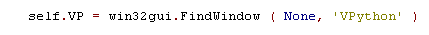

Docking VPython ( november 2008 )
Application Designer / Domain Expert / Control Designer / Core Developer
Introduction
We want to use VPython in PyLab_Works to visualize 3D physics. To make VPython an integral, easy to use visualization tool, it's necessary to dock VPython in PyLab_Works.
At first sight docking of VPython seems almost impossible, due to the special structure of the VPython package, the way it handles it's graphical output and the awesome high level of the functions and other automation. The solution provided here is for MS-Windows only, but the ideas presented here might stimulate an Linux and / or Mac guru to implement something equal for these Operating Systems. The solution found, is one big trick and is more base on trial and error than on pure knowledge, so major improvements / simplifications ought to be possible if re-factored by a specialist.
Docking
The first problem is to dock the VPython display window into the wxPython container. This is basically an easy step, although some mechanism is needed to wait until the VPython display window really exists. The VPython display window can be found by searching for a window with the title "VPython" (of course it's better to give the window in VPython a more unique name). Searching for a specific window type is discouraged, because it relies on the implementation in VPython, that might vary among versions, so we set it to None (=NULL).

As we know the container where the VPython display should be docked, we can easily retrieve the handle of the container (in this case "self.STC") :
And by using the SetParent function, the VPython window will be docked and fixed within our application:
Remove Caption and Frame
For real docking we want to remove the caption and the frame of the VPython window, so the user can't control the buttons and mouse actions on the caption and frame-borders. In windows this is not possible at all, because the frame settings can only be set at the time of creation of the window, of which we've no control at all. But with a trick we can realize the same effect, by the correct positioning and sizing of the window in a container.
Position and Sizing
Of course we want that the container that contains the VPython application also controls the size of the VPython display. By making the Vpython display a little bit larger than the container, we can achieve a situation where caption and frame borders will fall just outside the container and thus will be unreachable for the user. Normally positioning of a window should be simply done with the function SetWindowPos, but for some unknown reason, that doesn't work when the VPython display is docked. It might have a relation with the fact that VPython display properties x,y,width,height are not accessible (not even for reading) while the display is visible. Based on this assumption we found a workable solution by trial and error, which looks like this:
hide the VPython window
show the VPython window ( this fully recreates the VPython window, because afterwards it's undocked and has another handle ).
Set the position and size of the VPython window, notice the negative y-position to get rid of the caption. On winXP in teletubie-view and Vista these values should be slightly larger.
redock the VPython window

Misc
There's one other thing to remind, visual must be imported as one of the first modules, otherwise the DLL can't be loaded !!??
Timing
Timing is the next thing to solve: recreating a VPython window takes a considerable amount of time ( a few seconds), while some resize events comes at a high repetition rate ( 10 per second or even more). Sizers in wxPython behaves quit nice, they only send a resize at the end, but a windows resize sends resize commands continuously. We solved this problem with a finite state-machine, clocked by a wx.Timer. A clock period of 100 msec seems to work quit well (not perfect !!). Maybe it should be better to detect a mouse up event.
Demo
The demo code can be found in PyLab_Works.